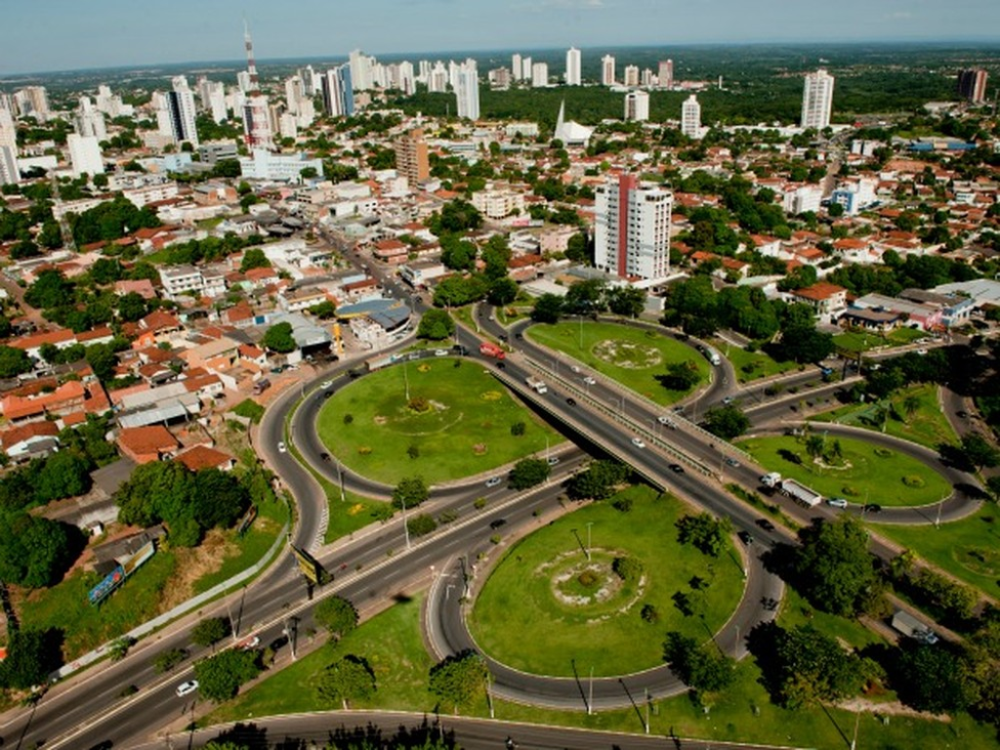

Mato Grosso possui um dos maiores territórios do país e grande destaque na agricultura e pecuária. O estado abriga partes importantes da Amazônia, do Cerrado e do Pantanal, tornando-se uma região de enorme biodiversidade. Sua economia é fortemente baseada na exportação de grãos e carnes. Além disso, o turismo ecológico cresce devido às paisagens naturais e à vida selvagem abundante.
